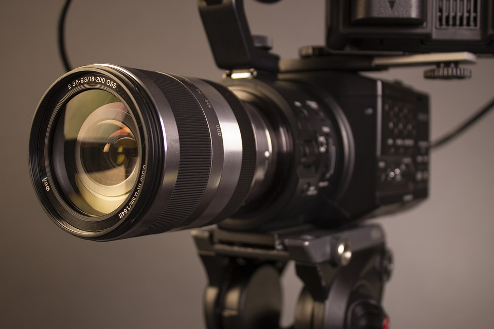
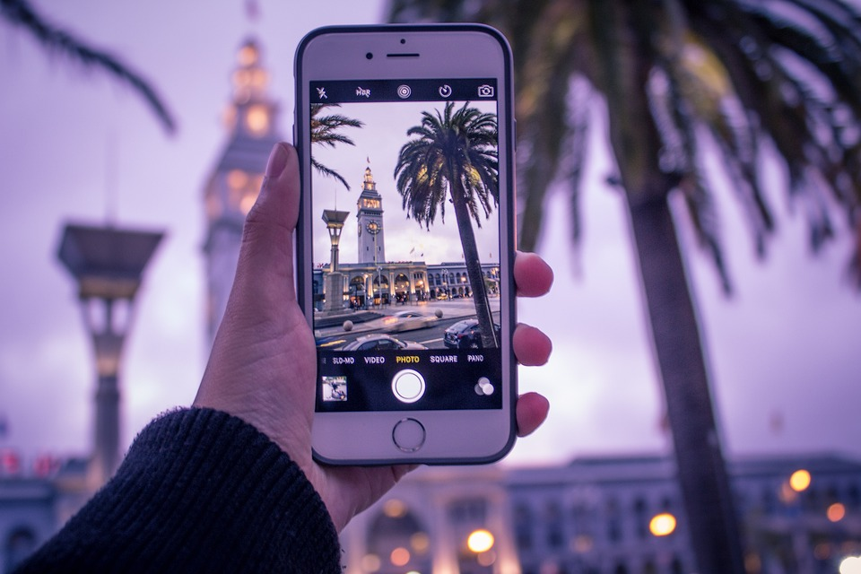
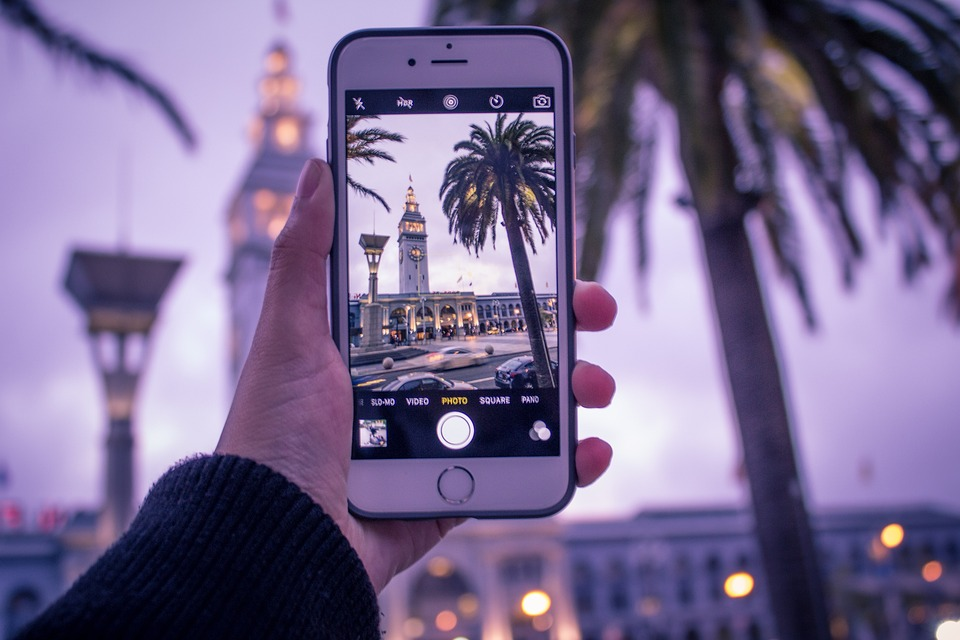

- kamera
- sodobnejše naprave za zajem videa
Naprave za zajem videoposnetka
Kamera
Najbolj standardna naprava za zajem videa je kamera. Kamere so nameščene, lahko pa se celo gibljejo iz vseh smeri. Primer gibajoče kamere so na primer lebdeče kamere na velikih koncertih in večjih šovih, kjer so kamere nameščene na strop dvorane. Pri postavitvi kamere moramo biti pozorni na zorni kot, ki ga kamera snema, pravilno osvetlitev in tudi na format, v katerem želimo imeti posnetek zajet.
Sodobnejše naprave za zajem videa
 

Dandanes pa za zajem videoposnetka ne potrebujemo več nujno kamere. Vsem nam je
zelo dobro znano, da se tehnologija tako hitro
razvija, da že s svojimi pametnimi telefoni ali tablicami lahko zajamemo zelo kvalitetne posnetke, ki jih kasneje lahko dobro
obdelamo. Ne smemo pa pozabiti še ene naprave, ki nam pri produkciji zelo kvalitetno pomaga, ko želimo posneti zorni kot tlorisa.
To
je dron. Je kamera, ki jo upravljamo na daljavo.
S propelerji se dvigne visoko nad nas in posname tloris pokrajine, športnega
dogodka, večjega šova.